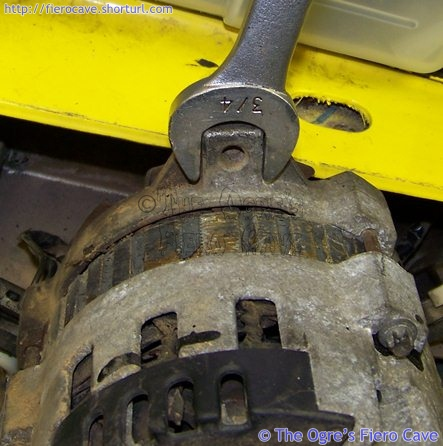
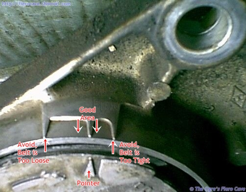
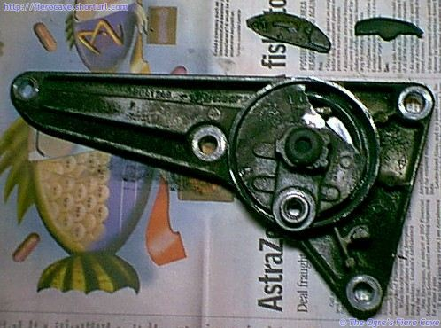
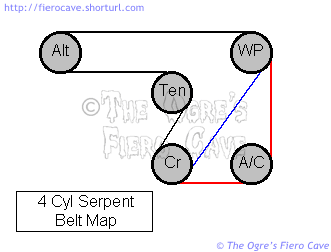
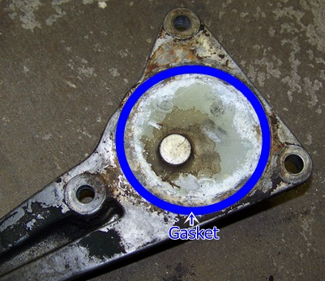

Go Home
Site Map
Go Home
Site Map
Serpent Belt
While this article was originally written for Fiero 1987-88 L4, it applies to all vehicles with serpent belt systems.
WARNING: Do not assume that the belt listed in the catalog fits your engine! If the belt forces the tension assembly out of range you can and likely will break things.
WARNING: NEVER force the tension assembly! If you don't break it instantly, it probably won't last long. Most tension assemblies have internal stops. IF the tension assembly is actually binding, replace it ASAP or you will find yourself stranded someplace, likely someplace nasty, in the near future.
DO NOT start a car that shows the tension assembly out of range! You will not be able to exchange the belt once you run it even a few turns. Running the belt WILL NOT make it fit. (You also want your hands and the pulleys clean as most stores won't exchange a filthy item.)
Tools and Tension Specs
Belt Wear
App and Gauge from Gates are still free. The Gates gauge is much easier to use on the car. Hole goes on tip of ring finger then you can feel the gauge area to pass/fail the belt w/o seeing.
www.gatesprograms.com/beltwear/beltwear
Manual Tension tools
Use a wrench to tighten the belt.

Belt tension
For use with Krikit tool etc.
Google: krikit gauge
V6 uses small Krikit tool because its test range, 30-150lb, even tho Dayco says V belt.
Note that a belt is "used" after engine runs just a few seconds.
| 2.5 VIN R, New | Alt 145lb | AC 165lb |
| 2.5 VIN R, Used | Alt 70lb | AC 80lb |
| 2.8 VIN 9, New | Alt 145lb | AC 145lb |
| 2.8 VIN 9, Used | Alt 70lb | AC 70lb |
Source: 86FSM but apply to all engine w/ manual belt tension. (Last page in Engine Cooling section)
Sorry, GM gives No data for 87 and later 2.5 VIN R.
Things to remember about serpent belts.
- Newer EPDM Belts does not show wear as old rubber that would have cracks. See:
Gates Neoprene Belt Wear vs. EPDM Belt Wear
DAYCO Training - When properly tensioned Serpent sets will always out perform V-belts. This is why nearly all Serpent sets use a spring tensioning device. (See note at bottom.) It is critical the belt tensioning device work properly or belt life will be shortened tremendously. Because Serpent sets are carefully calibrated, life of PTO devices is also improved. The alternator, water pump, etc, are all protected from running with an over tightened or loose belt, which protects the bearings and sheaves from excess wear.
- These belts HATE oil grease and coolant. You'll eat one up in short order if you get one contaminated and don't clean it off. If for example you spill oil during an oil change and it gets on the belt or a pulley you must clean it up. To fully clean it up take off the belt and wash everything in citrus base cleaner or Simple Green. NEVER use parts washer or other solvent on the belt. (Brake Parts Cleaner will work well on the pulleys.) If you don't get this mess cleaned up then the belt will glaze and start squealing. Once the belt squeals it must be replaced.
- Make sure the belt is running centered on the Idler pulley. In Fiero this is the smooth pulley that runs on the backside of the belt. If the belt is running off the edge of this pulley then the spring arm has likely gone bad and will have to be replaced. The spring arm cannot be serviced. (Only the bearing in the idler pulley can be replaced.)
- On some cars the Idler may be grooved and other pulleys may be smooth. All the pulleys must line up or you'll eat belts. (The FWD applications of the 2.5 often have a smooth water pump pulley.) The belt must never be allowed to run off the edge of a pulley.
- Whenever the belt is off carefully check the bearings in the idler pulley, water pump, and alternator. (If present check the AC compressor.) If the bearings are sloppy, rumble, or feel "dry" as you turn the shaft then you have other problems besides the belt wearing.
- When installing the belt it helps to have someone under the car to hold it on the crankshaft and AC pulleys. These are hard to see and new belts tend to have a mind of their own about staying on them.
- On Fiero L4 and some others... Slip the belt over the smooth tension pulley last. Let the belt lay between the pulley and the wrench until it is around all the gooved pulleys.
- Keep an emergency belt and the wrench in the car at all times. For an emergency belt I recommend using the belt for cars without AC, even if the car really does have AC. This belt is easier for one person get on from the top with the least amount of mess. It will also give you backup if/when the AC compressor fails and cooks off the belt. (With the age of most AC compressors the chance of this is pretty high.) You can drive a car w/o AC but not a water pump or alternator. (It depends on the car. Fiero 4 cyl's can be run with either the AC or non AC belt. Some cars can't do that trick.)
Side note: Some cars use serpent belts in place of V belts, and also tension them the same way by adjusting either the Alternator or AC compressor. It is critical that these applications be correctly adjusted or the belts will not last. Serpent belt material is much more picky about tension that V belts.
Why Does My Belt Keep Failing?
The first thing to check is pulley alignment and operation of the tensioning device. A critical factor here is that pulleys that are close together tollerate much less alignment error than pulleys far appart. An AC equiped Fiero will eat belts very fast if the crank, AC and Waterpump pulleys are just a little off. A non AC Fiero can take a more error as all the pulleys have longer belt runs.
Make sure every pulley is clean. Make sure nothing is packed into the grooves or built up on the peaks. Packed dirt will make problems.
Is oil or coolant getting on the belt? That will kill it fast.
How are you cleaning the car? Some cleaning and most wax products are bad for the belt. Fiero's vent grates allow such products to easily find their way onto the belt. It wouldn't be a bad idea to throw a cover over that side of the engine to prevent car wash products from getting on the belt. (Make sure the cover can't contact hot exhaust parts! Remove the cover as soon as you are done washing!)
Check the AC compressor! If there is any missing or loose hardware, the compressor will move and alter the pulley alignment. Any alignment error will greatly shorten belt life but it is even worse with a high load item like the AC.
The belt's life will be affected by the high heat in the engine bay. Depending on the setup of the vent grates, and a few other things, the belt may not last more than a year or two even if everything else is perfect. My experience, even with Fiero's hot engine bay, is that the belts will last several years unless the pulleys have problems.
Checking Belt Tension
This works for most spring tensioners and will check your belt length as well without measuring anything.
- On the big round end of the arm where the pivot and spring are, there is a small arrow. It is hard to see and is often just a small triangle.
- On the arm mount, there is a gauge area. This often looks like V*******V or it may be a simple raised/indented bar on the metal. It can be hard to make out too.
- You do not want to see scale at top end or bottom end. You want a belt near middle of the Scale. (Middle Arrow in pictule below.)
- When you install a belt, the Belt should slip on easily.
 Both marks are usually on the top part of the tensioner's pivot area and shouldn't be hard to find once you clean the dirt off. The image left shows the actual scale on an 87-88 Fiero L4 tensioner assembly. A new belt should have the pointer on/between the closer marks. (These marks will be slightly toward the front of the car on top of the tension assembly. The bolt hole you see is by the water pump.)
The pointer on the arm must be within the gauge area on the bracket. If the pointer is not in that area, the belt is not at the right tension and probably will not last long. Ideally the pointer should be in the middle of the gauge. If it is right at the low limit, the left end of the scale in the image, then it will probably move out of range as soon as the belt wears in some. Frankly If the belt is even close to the low limit, you want to replace it. Either it is very worn or significantly too long.
This belt doesn't fit, the Catalog must be wrong...
If you can't get the catalog belts on a car with a spring tension setup, you could have a few things besides a wrong belt. For the 87+ Fiery L4 here are some of the most common listings:
- Fiero 2.5L with AC: K060660 (Gates) 660K6 (Drive-Rite) 5060660 (Dayco) 4060660 (Goodyear)
- Fiero 2.5L no AC: K060615 (Gates) 610K6 (Drive-Rite) 5060610 (Dayco) 4060615 (Goodyear)
The Gates Goodyear and Dayco numbers are direct from their online catalogs. Drive-Rite, a Dayco brand, is from PartsAmerica.com Oddly the Drive-Rite and Dayco cross references to Gates K060612, which is .29 inch shorter than K060615.
There is some tolerance in the system for variations in length. As long as the tensioner stays in the proper range, it doesn't matter if one catalog says a hair longer/shorter than another. If you put a belt on that is at the bottom limit new, it could get out of spec once it runs in so make sure you check it after a few hours running.
Warning: The belt should easily slip onto the Idler Pulley on the Tension Assembly.
You should never have to fight a belt onto the idler. (Or whatever pulley goes last on other engines.) At the same time when you let off the idler, the idler should keep it tight. (Duh.) The range of acceptable belts is fairly small.
If the listed belts won't fit, the first thing to check is the number printed on the belt. It's not uncommon to have the belts get in the wrong package. The sleeve packing many companies use can fall off and sometimes the parts store or distributor puts the wrong belt back in the thing.
If you got the listed belt ok then you could have a bad belt tension device. These often bind up with age and you may not be able to move them far enough to mount the belt. Don't use a longer belt to get around this. The longer belt probably won't be tight enough and could fail really fast. Go by the scale on the tension assembly! If the pointer is off scale the belt is too short regardless of catalog listing.
You could also have a replacement alternator or other device with the wrong size pulley. This is very common and why you need to check the pulleys on replacement parts. A small change in any one pulley can result in a belt change of an inch or more depending on the pulley size and how much belt wrap it has. If a pulley has changed, it could cause you other problems. If the alternator is spinning too fast or slow there can be trouble. (Read Watt Story for more on that.)
There is some variation between how belts sit on the pulleys. This can be from one brand/type to another or even from one batch to another.
You may also suffer from "tolerance stacking." In this case slight variations in mounting of the driven devices can require a slightly longer or shorter belt on the system. The alternator, AC compressor, waterpump and so on have some slop in their mounts. Over time and various parts replacements these parts may be in slightly different locations than original. These changes can add up in ways that make the belt path longer or shorter than the vehicle maker called for. The catalogs all list only what the vehicle maker said fits.
How serious is correct belt fit?
If you want to avoid this...
Make bloody sure that the tension assembly's pointer is on the scale. Most if not all tension assemblies will not tolerate being pulled over range. If the pointer goes off scale low, the belt can go completely slack and be thrown from the engine.
To be more annoying... You won't know until you try a given belt. There is enough variation that a 66 inch belt from one maker will sit a little differently and be ok while another doesn't fit. Belt route will also be a factor. Bypassing the AC on the Fiero L4 can make it so all the 61 inch belts fit even when you have problems with some 66 inch belts.
How do I read a belt size?
The last or first three digits of the belt size tell you how long it is in inches and tenths. A 660K6 or x060660 (x varies by brand/type and isn't very important.) is 66.0 inches long. The next two sizes larger are 665 and 670. 66.5 and 67.0 inches. (In my case the 670 belt has the pointer just a hair above the "middle" mark on the scale.)
An important note... The sizes that end in 5 are not always exactly .5 inch. Dayco 5060665 is actually 66.6 inches according to Dayco. That means you need to check belt specifications.
87-88 2.5
As many of you may have noticed the serpent belt setup used in the 87-88 4 cylinder cars is not well covered in the Haynes or Chilton's books. (At least not that I've ever found it.) The belt is easy to deal with as long as you keep a few things in mind.
The Fiero 4 cylinder Serpent belt requires no adjustment. Belt tension is controlled by a spring-loaded arm.
The one tool you should have is a "serpent belt wrench." You can do without this tool but it usually means yanking the battery to get enough room to rotate a socket wrench. The belt wrench is made to fit into the confined space in Fiero and other such cramped cars. It's worth the extra cash. ($15-30 US, shop around.) These are cheap enough that you can bend them for a custom fit to a given car, tho I think you will have to heat them to bend them.
To unload the belt tensioning arm put a 15mm wrench on the Idler Pulley bolt and rotate the wrench toward the battery. NEVER attempt to remove or rotate the bolt in the center of the spring arm!
Belt Map
For those people that don't have the belt map on the deck lid...
What does it mean when my tensioner is Bad or it can be Fix?
Tensioner has 2 problem.... (Beside above.)
- Tensioner arm is bad. Meaning tensioner arm's pivot is worn out. (Arm pivot has an Allen bolt. Do not take it apart!) Buy a new tensioner. GM Part Number is 10041248.
- Idle pulley bearing is bad. Rodney Dickmans has bearing and cost $10.
Bearing noise can be also alt, water pump, or if you have it... AC pump.
AC pump can pump or pulley. Noise stop when AC pump is on then clutch pulley is bad. Noise on when AC in on then bad pump or something is loose.
Tension Assembly Replacement
Replacement assemblies should come with a gasket on the engine side. If the gasket is missing, you will have to make one. The gasket needs to be 3/32 inch thick. RTV Silicone WILL NOT work in this application!

- Drain the cooling system. (The arm unit forms a cover on the front of the water jacket.)
- Disconnect the battery and remove it.
- Remove the top alternator bolt. (You may want to loosen the bottom one, the new tensioner may not line up exactly.)
- Remove the Idler Pulley from the old and new tension assemblies.
- Remove the old tension assembly and install the new one.
- Replace the Idler Pulley on the new Tension Assembly.
If the new arm comes with a cork gasket then paint the gasket with Permatex High Tack, Permatex Super 300, or Balkamp Aviation sealer. This will fill any pours in the cork. A VERY THIN film of RTV Silicone will work if that is all you have handy. Make sure the whole area of the block covered by the arm base is clean before installing the new arm. If you pinch something between the arm and block you will likely damage the new arm or prevent it from sealing.
The new arm provided by Pontiac is built a little better than the original one. You should only have to replace the part once in the life of the engine. (Keep in mind, because this arm is a cover on the water jacket it is exposed to full operational heat of the coolant. The old grease in the arm didn't hold up well, and that results in pivot wear.)
Why Is There a Hole In My Block?
The large hole in the 4 cylinder that is covered by the serpent tensioning device is the opening for the water pump when this block is used in other vehicles. In most FWD versions, the hole has a steel cover bolted over it. The only variation I've seen use the hole is the S-10 truck. (I'm not sure if S-10 is exactly the same block or not.)